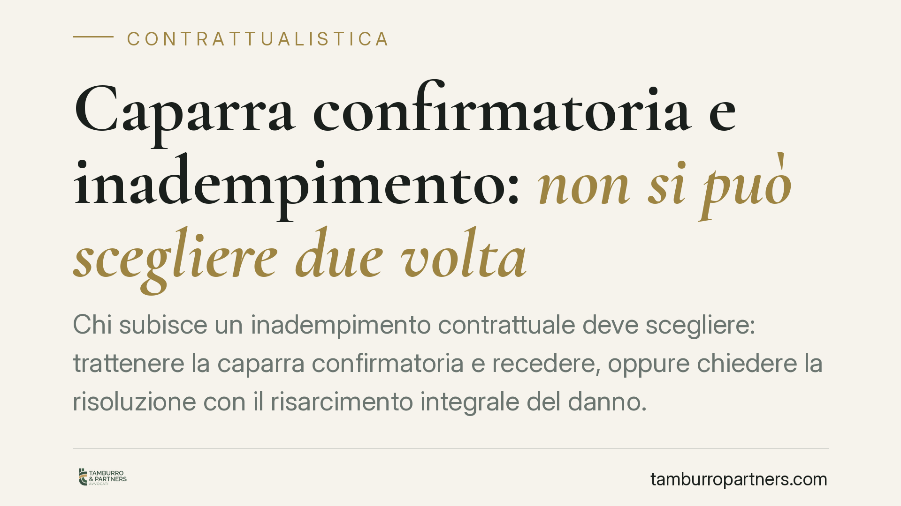

Caparra confirmatoria e inadempimento: non si può scegliere due volta
Chi subisce un inadempimento contrattuale deve scegliere: trattenere la caparra confirmatoria e recedere, oppure chiedere la risoluzione con il risarcimento integrale del danno. La giurisprudenza ribadisce che le due strade sono alternative e non cumulabili. Una scelta sbagliata, o tardiva, può compromettere la tutela. Vediamo come orientarsi.

Il quadro normativo
La caparra confirmatoria è disciplinata dall'art. 1385 del Codice civile. È la somma che una parte consegna all'altra alla conclusione del contratto. Se chi l'ha versata è inadempiente, l'altra parte può recedere e trattenerla. Se inadempiente è chi l'ha ricevuta, chi l'ha versata può recedere ed esigere il doppio.
Questo meccanismo offre una liquidazione anticipata e forfettaria del danno: non occorre provarne l'ammontare. È un rimedio rapido ma chiuso, perché il risarcimento resta contenuto nell'importo della caparra (o del doppio).
Accanto a questa via esiste quella ordinaria dell'art. 1453 c.c.: la parte fedele può chiedere la risoluzione del contratto e il risarcimento integrale del danno subìto, da provare nella sua effettiva misura. È un percorso più oneroso sul piano probatorio, ma potenzialmente più ampio nei risultati.
Il principio di alternatività
Il punto centrale è che i due rimedi non si sommano. La giurisprudenza, a partire dagli orientamenti delle Sezioni Unite, ha consolidato il principio secondo cui recesso con ritenzione della caparra (art. 1385) e azione di risoluzione con risarcimento integrale (art. 1453) sono tra loro incompatibili.
*Nota di verifica: una recente pronuncia della Corte di Cassazione (indicata come sent. n. 4301/2026) ribadirebbe questo principio. Gli estremi vanno verificati prima di qualunque uso applicativo; il principio di alternatività, in ogni caso, è da tempo consolidato nell'elaborazione delle Sezioni Unite.*
La conseguenza è netta. Chi agisce per la risoluzione con risarcimento integrale non può, in un secondo momento, ripiegare sulla ritenzione automatica della caparra come indennizzo forfettario. La scelta del rimedio ex art. 1453 preclude l'automatismo proprio dell'art. 1385.
Ciò non significa che la caparra sparisca dalla scena. Significa, più precisamente, che nel contesto della domanda di risoluzione essa non opera più come liquidazione automatica del danno: la sua sorte (restituzione, imputazione, computo) dipende dagli esiti del giudizio e dalle domande proposte. La ritenzione resta possibile in altri scenari, ma non come scorciatoia sovrapposta all'azione risarcitoria ordinaria.
Implicazioni pratiche
Per chi subisce l'inadempimento, la decisione è strategica e va presa a monte. Trattenere la caparra significa accettare un ristoro certo ma limitato. Agire per la risoluzione con risarcimento integrale apre a un ristoro potenzialmente maggiore, ma impone di provare il danno effettivo e di sostenere i tempi del contenzioso. Le due vie non sono recuperabili l'una dopo l'altra: imboccata una, l'altra si chiude nella sua funzione tipica.
Per chi ha versato la caparra, la posizione è speculare. Se l'altra parte ha scelto la risoluzione con risarcimento, non potrà pretendere in aggiunta la perdita automatica della somma versata. Chi ha anticipato la caparra ha quindi interesse a verificare con precisione quale domanda sia stata effettivamente formulata, perché ne discende un diverso regime della somma.
Il terreno più delicato è quello delle compravendite immobiliari, dove la caparra è prassi diffusa e gli importi sono rilevanti. Qui un errore nell'impostazione della domanda può tradursi in una perdita economica concreta.
Cosa fare in concreto
- Qualificate la somma versata. Leggete la clausola: verificate se è caparra confirmatoria, caparra penitenziale o semplice acconto. La disciplina cambia radicalmente.
- Scegliete il rimedio prima di agire. Decidete se recedere con ritenzione della caparra o agire per la risoluzione con risarcimento integrale. Valutate l'importo in gioco e la provabilità del danno.
- Non cumulate le domande. Evitate di chiedere la risoluzione con risarcimento integrale contando di trattenere comunque la caparra come indennizzo automatico: sono vie alternative.
- Documentate il danno se optate per l'art. 1453. Raccogliete prove del pregiudizio effettivo, perché il risarcimento integrale va dimostrato.
- Verifica preventiva della clausola. È opportuna una verifica della clausola sulla caparra prima della stipula, per definire fin dall'inizio il tipo di tutela disponibile in caso di inadempimento.
---
Contributo informativo a cura di Tamburro & Partners Avvocati – Avv. Giuseppe Tamburro. Non costituisce parere legale.
Ogni contratto ha il suo equilibrio.
Se vuoi una revisione delle clausole o una redazione su misura, scrivi allo studio. Ti rispondiamo entro un giorno lavorativo.